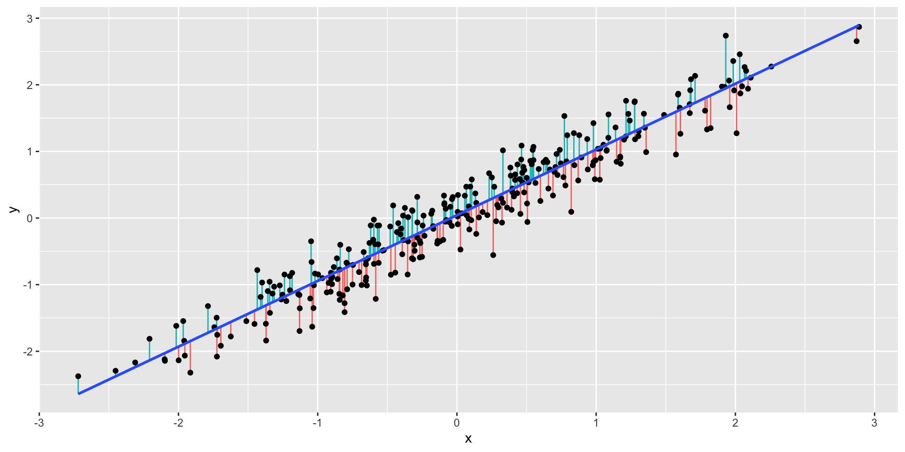
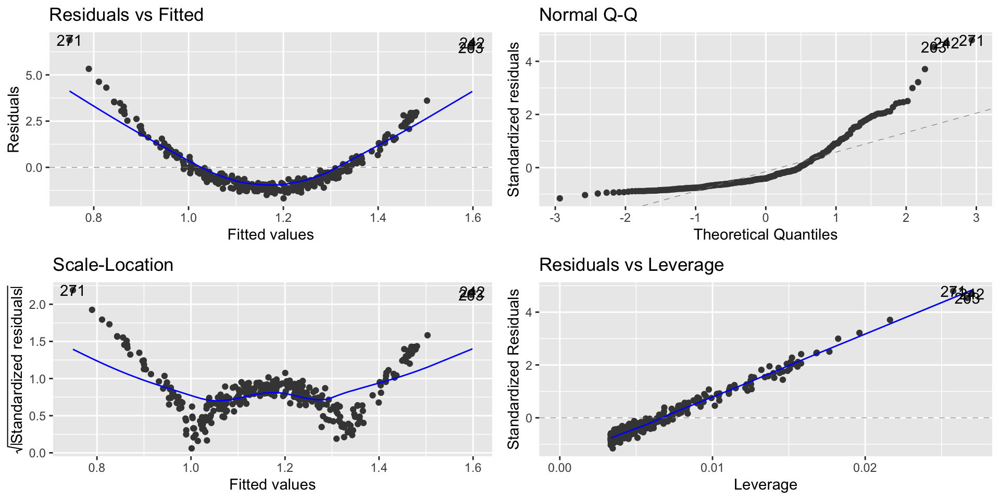

library(tidyverse)
ggplot(linear_data, aes(x=X, y=Y)) +
geom_point() +
geom_smooth(method="lm", se = FALSE)Data Science for Business Applications
Regression Assumptions, and Potential Problems
Linear models are useful:
Prediction - given a new observations
Explanatory power- which variables affects the response
But issues in linear model are not uncommon:
They can affect the explanatory, and predictive power of our model
They can affect our confidence in our model
We will look at some of the most common problems in linear regression, and how we can fix them
Regression Assumptions, and Potential Problems
These issues are related to:
- Regression model assumptions
- Influential observations, and outliers
Multiple regression assumptions
We need four things to be true for regression to work properly:
Linearity: \(Y\) is a linear function of the \(X\)’s (except for the prediction errors).
Independence: The prediction errors are independent.
Normality: The prediction errors are normally distributed.
Equal Variance: The variance of \(Y\) is the same for any value of \(X\) (“homoscedasticity”).
Non-Linearity
- What we would expect to observe in a regression where there is a linear relation?
Residuals
- Let’s plot the residuals \(r_i\), such that \[r_i = y_i − \widehat{y}_i\] where \(\widehat{y}_i = \widehat{\beta}_0 + \widehat{\beta}_1 x_i\) vs \(x_i\)
- Residuals are basically the distances between the model and the points
- Hopefully identify non-linear relationships
- We are looking for patterns or trends in the residuals
Residuals
- Plot of the residuals
- How can these residuals be useful for us?

Regression diagnostic plots
We’ll use regression diagnostic plots to help us evaluate some of the assumptions.
The residuals vs fitted graph plots:
- Residuals on the \(Y\)-axis
- Fitted values (predicted \(Y\) values) on the \(X\)-axis
This graph effectively subtracts out the linear trend between \(Y\) and the \(X\)’s, so we want to see no trend left in this graph.
Regression diagnostic plot
- To check non-linearity we focus on the Residual vs. Fitted plot
library(ggfortify)
lm1 = lm(Y ~ X, data = linear_data)
autoplot(lm1)
Regression diagnostic plot
From the Residual vs. Fitted plot, we can observe that since the residuals are evenly distributed around zero in relation to the fitted values, we have that the linear regression model is a good fit for this data.
This means that we are learning the linear representation contained in this data.
Non-Linearity Example
- What we would expect to observe if the relation is non linear?
ggplot(nonlinear_data, aes(x = X, y = Y)) +
geom_point() +
geom_smooth(method="lm", se = FALSE)
Non-Linearity Example
- Let’s look at the residuals for this model
- Let’s check the residual plot
Non-Linearity Example
lm2 = lm(Y ~ X, data = nonlinear_data)
autoplot(lm2)
Non-Linearity Example
From the Residual vs. Fitted, we can observe that the residuals are not evenly distributed around zero.
This indicates that for lower and higher values of \(x_i\) our model is overpredicting and underpredicting in the mid values.
What are the implications in this case?
Worse predictions
Independence
- Independence means that knowing the prediction error for one observation doesn’t tell you anything about the error for another observation
- Data collected over time are usually not independent
- We can’t use regression diagnostics to decide the independence
- We have to measure the autocorrelation of the residuals
- We’ll get back to autocorrelation when we discuss Time Series models
Normality assumption
- When we’ve been interpreting residual standard error (RSE) , we’ve used the following interpretation:
- 95% of our predictions will be accurate to within plus or minus \(2\times RSE\).
- In order for this to be true, the residuals have to be Normally distributed
Normality example
- We can check the distribution of the residuals
linear_data = linear_data %>%
mutate(resid = residuals(lm1))
ggplot(linear_data, aes(x = resid)) +
geom_histogram(color = "grey", binwidth = 0.2) 
Normality example
- But how can we judge if the residuals follows a Normal distribution?
- The key is to look at the Normal Q-Q plot, which compares the distribution of our residuals to a perfect Normal distribution.
- If the dots line up along an (approximately) straight line, then the Normality assumption is satisfied.
Regression diagnostic plot
- To check for Normality we focus on the Normal Q-Q plot
lm1 = lm(Y ~ X, data = linear_data)
autoplot(lm1)
- In this case the normality assumptions seem to be met
Normality example
- Let’s look at different data.
- In this case the data has non Normal errors.

Normality example
- Histogram of the residuals (right skewed)
lm3 = lm(Y ~ X, data = non_normal)
non_normal = non_normal %>%
mutate(resid = residuals(lm3))
ggplot(non_normal, aes(x = resid)) +
geom_histogram(color = "grey", binwidth = 1) 
Regression diagnostic plot
autoplot(lm3)
Interpretation of the plot
From the Normal Q-Q plot, we can observe that the residuals are not following the line that indicates the Normal quantiles
This means that our model results in non-normal residuals
This affects statistical tests, and confidence intervals
Equal variance
- Equal variance is also known as “homoscedasticity”
- The variance of \(Y\) should be about the same at any \(X\) value (or combination of values for the \(X\)’s).
- In other words, the vertical spread of the points should be the same anywhere along the \(X\)-axis.
- If there’s no equal variance then we might have heteroskedasticity.
- Lower precision, estimates are further from the correct population value.
Equal variance example
- The vertical spread of the points is larger along the right side of the graph
ggplot(heter_data, aes(x = X, y = Y)) +
geom_point() +
geom_smooth(method="lm", se = FALSE)Regression diagnostic plot
- To check for homoscidacity we focus on the Scale-Location plot
lm4 = lm(Y ~ X, data = heter_data)
autoplot(lm4)
Interpretation of the plot
From the Sacle-Location plot, we can observe that the residuals have a fan shape, indicating that there is heteroscedacity in the data.
This resulted in lower precision; thus, estimates are further from the correct population value.
Influential observations
- Adding a new observation with \(X\) near the mean of \(X\) doesn’t matter much even if it’s out of line with the rest of the data:

- This point has high residual but low leverage. RSE = 0.5504
Diagnostics Plot
- We can observe the point with high residual on the Residual vs. Leverage plot
lm5 = lm(Y ~ X, data = outlier_residual)
autoplot(lm5)High leverage
- We can also have points with high leverage - when a point in \(X\) is distant from the average on \(X\)

- This point has low residual but high leverage. RSE = 0.2956
High leverage
- We can observe the point with high leverage on the Residual vs. Leverage plot
lm6 = lm(Y ~ X, data = outlier_leverage)
autoplot(lm6)
Points with high influence
- Points with high leverage and high residuals are known as influential points

- This point has high residual but high leverage. RSE = 0.8281
Points with high influence
- We can observe the point with high influence on the Residual vs. Leverage plot
lm7 = lm(Y ~ X, data = outlier_influence)
autoplot(lm7)Points with high influence
- When a case has a very unusual \(X\) value, it has leverage — the potential to have a big impact on the regression line
- If the case is in line with the overall trend of the regression line, it won’t be a problem
- But when that case also has a Y (high residual) value that is out of line
- We need both a large residual and high leverage for an observation to be influential
- We should be worried about these points
- They affect the coefficents and predictions